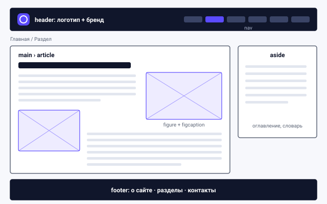
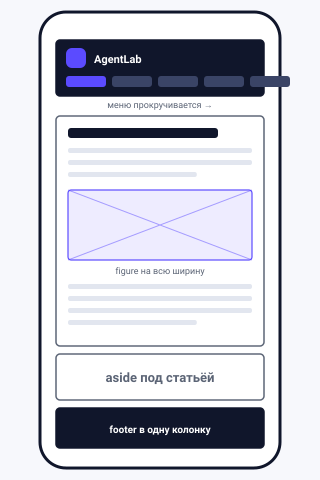
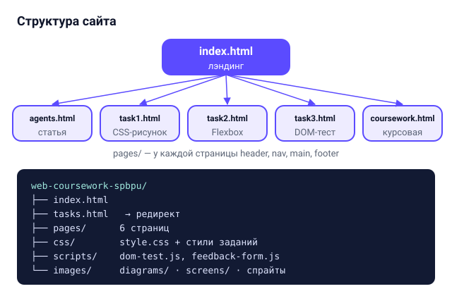
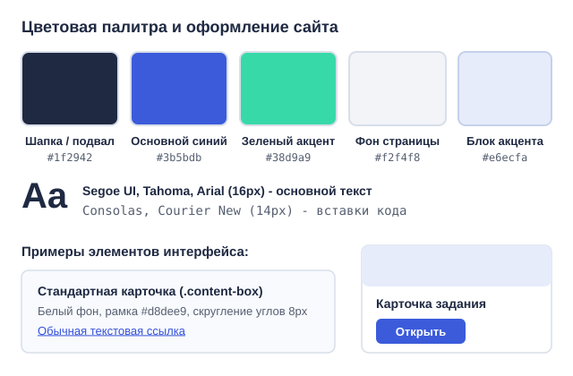

Описание разработки и верстки сайта AgentLab
На этой странице я описал, как проектировал и верстал этот учебный сайт по дисциплине "Верстка и прототипирование сайтов": от первых набросков макета и структуры папок до реализации собственного логотипа на чистом CSS и подготовки к курсу серверного программирования.
1. Проектирование макета


Перед тем как писать HTML и CSS, я продумал общую сетку страниц и набросал схему макета для компьютера
и для смартфона. Мне хотелось, чтобы сайт выглядел аккуратно, легко читался и при этом содержал все
обязательные элементы из задания: шапку (header) с логотипом и меню навигации, основную
рабочую часть (main), боковую колонку с быстрыми ссылками (aside) и подвал
(footer).


Главная страница построена по принципу лэндинга: сверху идет приветственный блок с кратким введением в тему ИИ-агентов и схемой, затем текстовый раздел с иллюстрациями, блок карточек для перехода ко всем лабораторным работам и форма обратной связи. А внутренние страницы со статьей и заданиями оформлены как полноценные учебные материалы с хлебными крошками, большими текстовыми блоками, картинками с обтеканием и переключением между соседними работами.
На маленьких экранах двухколоночная сетка автоматически перестраивается в одну вертикальную колонку: меню в шапке переносится на новую строку под логотип, боковая панель уходит вниз под статью, а картинки внутри текста перестают обтекаться сбоку и встают по центру на всю ширину экрана.
2. Физическая и логическая структура


Чтобы в проекте не было путаницы, все файлы разложены по отдельным папкам по своему назначению.
В самом корне лежит точка входа index.html (и обзорная страница tasks.html),
все внутренние страницы вынесены в каталог pages/, таблицы стилей лежат в css/,
скрипты в scripts/, а графика в images/ (внутри нее отдельно лежат векторные
схемы diagrams/ и скриншоты screens/). Все пути к стилям и картинкам прописаны
относительными ссылками, поэтому сайт без проблем открывается как просто из папки на компьютере, так и
после выгрузки на хостинг GitHub Pages.
Логическая структура документа на каждой странице опирается на семантические теги HTML5:
header, nav, main, article, section,
aside, figure с подписью figcaption и footer.
Табличная верстка нигде не используется - вся раскладка собрана на современных технологиях Flexbox
и CSS Grid, а для встраивания картинок непосредственно в текстовые абзацы применено классическое
свойство float: left и float: right с очисткой потока clear: both.
3. Единый стиль оформления


Весь общий дизайн вынесен в единый файл css/style.css, который подключается на каждой
странице сайта. За счет этого шапка, навигационное меню, подвал, кнопки, карточки и текстовые блоки
везде выглядят одинаково. При этом исходные файлы стилей самих лабораторных работ (pic.css,
flex.css и dom.css) лежат отдельно и подключаются только на своих страницах,
чтобы не мешать друг другу.
Для оформления я выбрал спокойную учебную палитру: темно-синий цвет (#1f2942) для шапки
и подвала, светло-серый фон страницы (#f2f4f8), белые карточки контента с тонкой рамкой
и ярко-синий акцент (#3b5bdb) для активных пунктов меню, кнопок и ссылок. В логотипе и
метках карточек дополнительно используется мятно-зеленый цвет (#38d9a9).
4. Собственный логотип средствами CSS
Демонстрация CSS-логотипа в трех размерах (36px, 48px и 70px). При наведении курсора антенна и глаза меняют цвет:
По условию задания логотип нужно было разработать самому и сверстать исключительно средствами CSS с базовым размером в пределах от 30 до 80 пикселей, ориентируясь на тематику сайта. Так как сайт посвящен ИИ-агентам, я решил сделать логотип в виде стилизованной головы робота-агента с экранчиком и антенной связи.
Базовый размер иконки в шапке составляет 48x48 пикселей (в подвале используется уменьшенная
версия 36px через transform: scale(0.75)). Сам корпус - это квадратный блок .logo
со скругленными углами и синим фоном. Псевдоэлемент ::before рисует белую ножку антенны сверху,
а ::after - круглый зеленый индикатор сигнала. Внутри расположен элемент .logo__core,
который изображает темный экранчик, а его псевдоэлементы ::before и ::after рисуют
два светящихся глаза. При наведении мыши логотип слегка наклоняется, а глаза и антенна загораются желтым цветом.
5. Адаптивность и проверка на разных экранах
Чтобы сайт нормально открывался и на ноутбуке, и на телефоне, я использовал резиновую сетку с максимальной
шириной контейнера 1100px и три медиазапроса (на 920px, 780px и
640px). Карточки заданий на главной странице сверстаны через grid-template-columns:
repeat(auto-fill, minmax(240px, 1fr)), поэтому при сужении окна браузера они сами плавно
перестраиваются из четырех в ряд в две, а затем в одну колонку.
6. Использование сайта в курсе серверного программирования
В требованиях указано, что этот сайт в дальнейшем можно будет использовать на курсе серверного программирования. Поэтому при верстке я сразу заложил несколько удобных моментов под будущий бэкенд (например, на Python FastAPI или Flask):
- Шапка и подвал на всех страницах имеют одинаковую разметку, так что их можно сразу вынести в общий шаблон
base.htmlшаблонизатора Jinja2. - На главной странице сверстана форма обратной связи с атрибутами
nameу каждого поля и отправкой POST-запроса на маршрут/api/feedback. - В третьем задании массив вопросов викторины отделен от логики отрисовки DOM, поэтому вместо локального массива вопросы можно легко загружать с сервера через
fetch('/api/quiz').
app/
main.py # сервер на FastAPI (маршруты страниц и обработчик /api/feedback)
templates/
base.html # общая шапка и подвал сайта
index.html # главная страница, расширяющая base.html
static/ # папки css/, scripts/ и images/